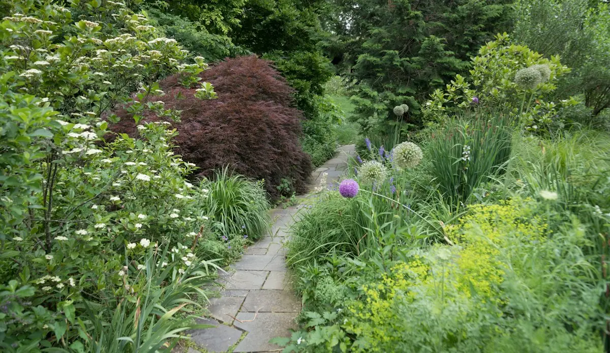
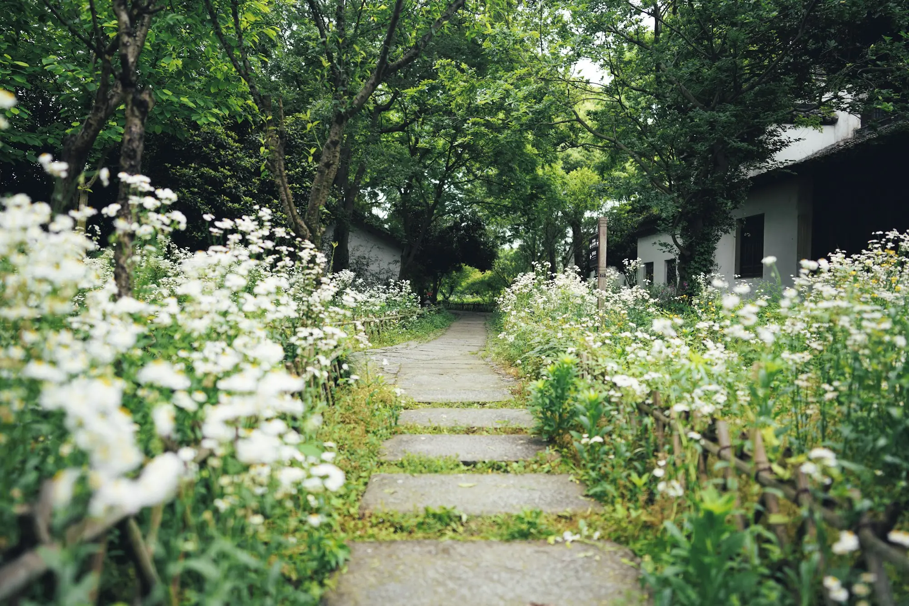
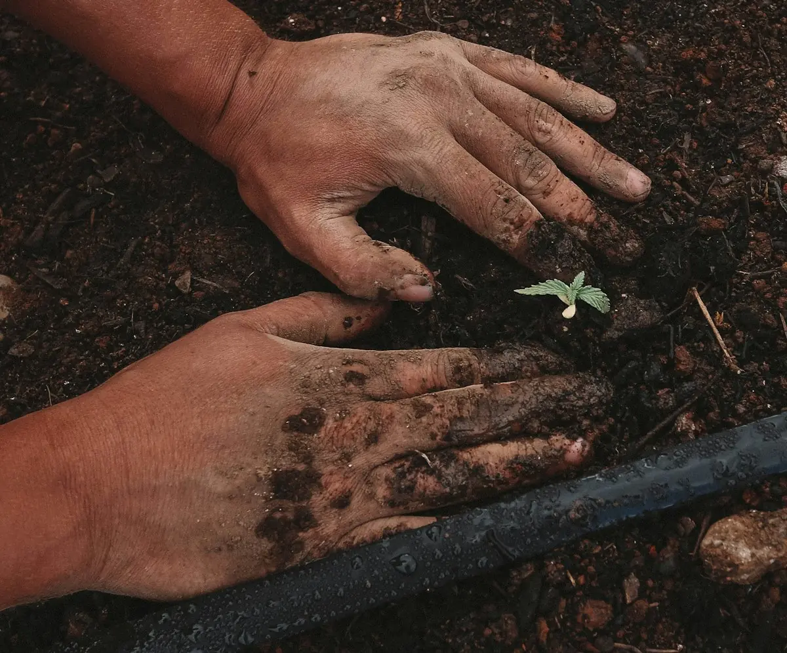
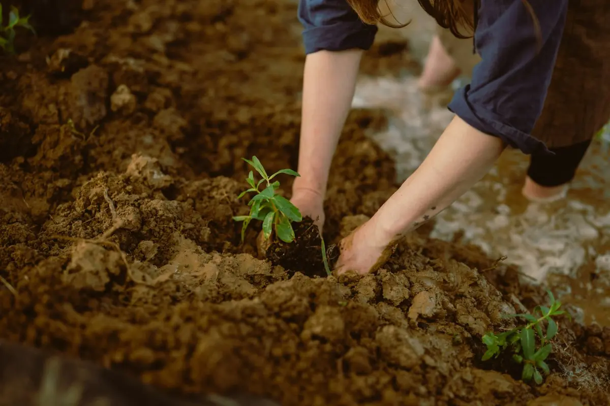

01 / DISEÑO
Diseño de jardines
Creamos espacios verdes que combinan estética, funcionalidad y tu estilo.
Consultar servicioJardinería Total
DISEÑO Y CUIDADO DE ESPACIOS VERDES
Preparando tu espacio verde…

JARDINERÍA TOTAL · ESPACIOS VERDES
Diseño, mantenimiento y cuidado de espacios verdes para disfrutar todos los días.
LO QUE PODEMOS HACER
Desde una idea nueva hasta el cuidado de todos los días, pensamos cada jardín para que se sienta propio.

Creamos espacios verdes que combinan estética, funcionalidad y tu estilo.
Consultar servicio
Cuidado del césped, plantas y canteros para mantener tu jardín en buenas condiciones.
Consultar servicio
Incorporación de césped, plantas y vegetación para transformar tus espacios exteriores.
Consultar servicioServicios propuestos para esta demo. Textos e imágenes editables.
IDEAS PARA IMAGINAR
Texturas, luz y rincones verdes que invitan a disfrutar el exterior.
Imágenes de referencia · No representan trabajos realizados por Jardinería Total.
SIMPLE Y CERCANO
Un proceso claro para llevar tu idea del primer mensaje al espacio que imaginaste.
Escuchamos qué necesitás y cómo te gustaría disfrutar tu jardín.
Evaluamos el espacio y definimos el trabajo a realizar.
Coordinamos los detalles para llevar la propuesta a la práctica.
ZONA DE ATENCIÓN
Contanos dónde estás y qué trabajo necesitás para consultar disponibilidad.
Consultar disponibilidadOPINIONES EN GOOGLE
Destaca la buena atención, una poda en altura rápida y segura, y la limpieza al terminar.
Cuenta que le respondieron enseguida, recibió un presupuesto conveniente y el trabajo quedó prolijo.
Señala que cumplieron en tiempo y forma y que el resultado superó sus expectativas.
BUENO SABER
Lo esencial para empezar a conversar sobre tu espacio verde.
Envianos tu consulta con una descripción del trabajo, tu zona y, si podés, fotos del espacio.
Sí, contanos tu idea y las características del espacio para evaluar una propuesta.
Tu ubicación, medidas aproximadas, fotos y el tipo de servicio que estás buscando.
HABLEMOS DE TU ESPACIO
Contanos qué necesitás y empecemos a darle forma a tu espacio verde.